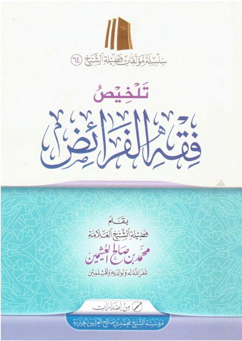
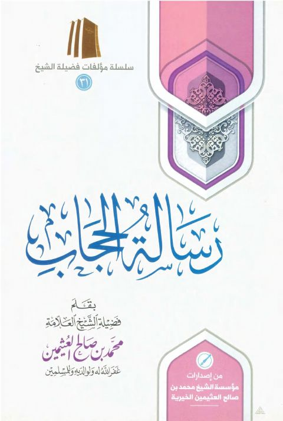

Publishers
مؤسسة الشيخ العثيمين الخيرية
Publisher
Resources

تلخيص فقه الفرائض- ط المؤسسة
تلخيص فقه الفرائض- ط المؤسسة
محمد بن صالح العثيمين
أحكام الأضحية والذكاة
أحكام الأضحية والذكاة
محمد بن صالح العثيمين

رسالة الحجاب
رسالة الحجاب
محمد بن صالح العثيمين